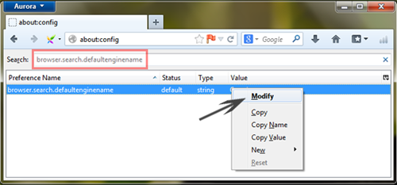

- Un sistema di computer infettato con worm.conficker completamente rallenta.
- Ottenere deviato il browser ai siti dannosi o pornografici.
- Molti dati e file importanti ottenere cancellati automaticamente dal sistema.
- Molti file strani ottenere aperti in nuove schede senza il permesso dell’admin
- La connessione internet perde la sua velocità per navigare.
- Molti infettivi annunci e pop up appaiono sullo schermo durante la navigazione.
- Molti strani suoni iniziano a venire fuori dal sistema informatico.
- A volte il sistema si blocca completamente, come gran parte della sua energia viene assorbita dalla infettive icone e barre degli strumenti.
Metodo manuale per eliminare worm.conficker dal computer:
- Cliccare su “start” > “pannello di controllo” > “programmi e funzionalità”.
- Ricerca worm.conficker, selezionarlo e premere “Disinstalla”.
Rimuovere da Google Chrome:
- Avviare Google Chrome e premere “Bar”icona nella parte superiore di destra.
- Dopo che fai clic su “impostazioni” > “cercare” > “Gestisci motori di ricerca”.
- Selezionare il motore di ricerca e cliccare su “Predefinita”.
- Fare clic sul segno “Croce” al fine di rimuovere il motore di ricerca particolare.
- Riavviare il browser per completare il processo di rimozione.
Rimuovere da Mozilla Firefox:
- Cliccare su “circa: config” dopo Mozilla di apertura e quindi premere “invio”.
- Tipo “parola chiave.URL”e premere tasto destro del mouse su di esso e quindi fare clic su”Modifica”.
- La casella del parametro deve essere lasciato vuoto.
- Scrivere “browser.search.defaultenginename” nella casella di ricerca e reimpostarla con il motore di ricerca necessari.

- Dopo aver avviato l’explorer, selezionare “Strumenti” e “Opzione Internet” accanto a quello.
- Premere”generale” > “Modifica impostazioni predefinite ricerca” > “impostazioni”.
- Selezionare il motore di ricerca preferito e premere “imposta come predefinito”.
- Riavviare il browser per completare il lavoro.
Rimuovere da Intert Explorer:
- Dopo aver avviato l’explorer, selezionare “Strumenti” e “Opzione Internet” accanto a quello.
- Premere”generale” > “Modifica impostazioni predefinite ricerca” > “impostazioni”.
- Selezionare il motore di ricerca preferito e premere “imposta come predefinito”.
- Riavviare il browser per completare il lavoro.
I programmi principali per rimuovere i worm sono:
- Microsoft Safety Scanner
- Strumento di rimozione malware
Home